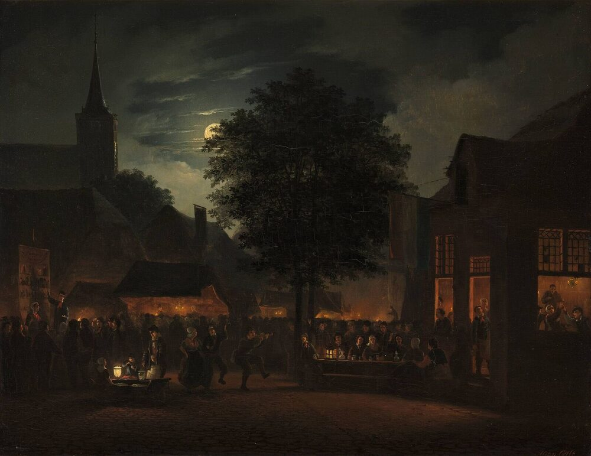
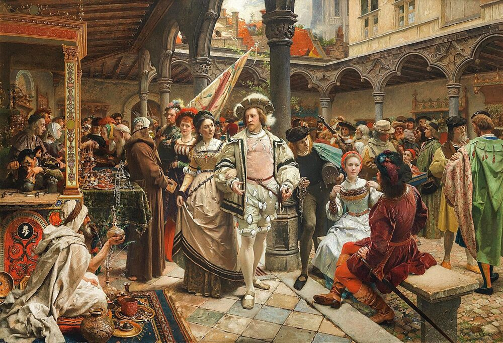

B1 · Food & Dining
Food on a Stick
The corndog, the state fair, and the three foods Americans argue about being American.
Play the audio and follow along, then read it again on your own. Tap or hover over a highlighted word to see what it means.
Every American state holds a fair, usually in late summer, and it is one of the few things in the country that looks the same in almost every state. There are prize animals, a competition for the largest vegetable somebody has managed to grow, rides that were assembled that morning by people who travel with them, and — the part everybody actually comes for — a very long row of stalls selling food you would not eat at any other time of year.

The defining item is the corndog. A hot dog is put on a stick, dipped in a thick cornmeal batter and deep-fried until the outside is golden and firm. It is eaten walking, which is the entire point: the stick exists so that you do not need a plate, a fork or a table, and can keep moving through the crowd.
Its origin is claimed by several places, which is usual for foods of this kind. Texas is the most confident claimant and dates it to the 1940s at the state fair in Dallas; Minnesota disputes this. The argument is unresolvable and mostly enjoyable. What is certain is that the form caught on, and that the state fair has since applied the same logic to almost everything else. Deep-fried Oreos, deep-fried butter, deep-fried ice cream, and an annual competition to invent something more improbable than last year's winner. It is not health food and nobody has ever claimed otherwise.
Away from the fairground, three foods get argued about as specifically American.

Apple pie is the oldest claim, and the phrase “as American as apple pie” is so common that it has become the standard way of saying that something is typical of the country. The pie itself is not American — versions were being baked in England and the Netherlands centuries before anybody brought one across the Atlantic. What is American is the association, and the fact that it turns up at Thanksgiving next to the pumpkin pie, which has a much better claim and gets less credit.
The hamburger has a German name and an American career. Whether it was first served in Connecticut, Ohio, Wisconsin or Texas is another unresolved dispute with several museums attached to it.
Barbecue is the one with the strongest claim and the least agreement inside the country, since Texas, the Carolinas, Kansas City and Memphis each regard the others as doing it wrong, and each is prepared to explain why at length.
There is a pattern in all of this. Almost nothing on the list was invented in the United States. The corndog is a sausage in batter, which exists in a dozen countries. The hamburger is German. Apple pie is English and Dutch. What is American is the treatment: the scale of it, the stick, the competition, the regional loyalty, and the insistence that a thing from somewhere else is now indisputably ours — which, given how the rest of the culture was assembled, is about what you would expect.
Key Vocabulary
- fair a large public event with competitions, rides and food stalls
- prize animal an animal entered into a competition to be judged
- ride a machine at a fair that people pay to be carried on
- actually in fact, really — careful: not 'at the moment'
- stall a small open shop or counter at a market or fair
- batter a thick liquid mixture of flour and egg that food is dipped in
- to deep-fry to cook by putting food completely under hot oil
- claimant somebody who says something belongs to them
- to dispute to argue that something is not true
- unresolvable impossible to settle
- to catch on to become popular
- to turn up to appear, often without being planned
- to get credit to be recognized for something you deserve
- at length for a long time and in detail
- loyalty firm support for one side over others
- indisputably in a way nobody can argue with
Food on a Stick — B1 · Food & Dining · Renan the Teacher, English Language Academy · https://renangrossi.github.io/englishclasses/reading/b1/state-fair-food.html
Interactive Exercises
Practice
Complete each exercise, then click Submit to see your score and an explanation for every answer.
Speaking & Writing
Discussion
There are no right answers here — use these to practice speaking, or write a short answer to each.
- “As American as apple pie” describes something that is not American. Does your language have a phrase like that?
- The stick exists so you can keep walking. What other foods are designed around how they will be eaten rather than how they taste?
- Four regions each think the others do barbecue wrong. Is there a food in your country people argue about that way?
- The writer says what is American is the treatment, not the invention. Is adopting something and making it yours a real kind of originality?
- Write about 150 words describing a food event where you live — what is sold, who comes, and why people go.